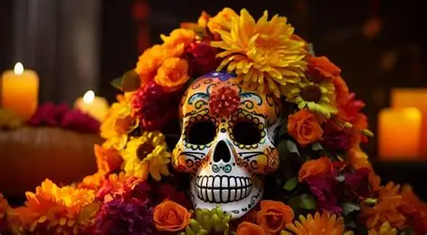

Bienvenida a la Celebración de la Vida
El DÃa de Muertos es una de las festividades más importantes y coloridas de México, donde se honra y recuerda a los seres queridos que han partido. Es un momento de alegrÃa, color, y unión familiar.
Explora nuestras secciones para conocer las tradiciones y sumergirte en una historia de terror.
Para entender mejor esta hermosa tradición, te invitamos a ver este breve video explicativo:
Las representaciones artÃsticas, como las coloridas calaveras, son un Ãcono de esta celebración que nos recuerda la vida después de la muerte.

Integrantes del Equipo
Este proyecto fue realizado por:
Doris Calderon Padilla